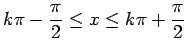
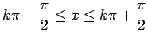

Inhalt Index DeskTop Bronstein

 Funktionen und ihre Darstellung Zyklometrische Funktionen (Arkusfunktionen)
Funktionen und ihre Darstellung Zyklometrische Funktionen (Arkusfunktionen)


Die Vorgehensweise wird am Beispiel der Arkussinusfunktion gezeigt, die in der ersten der vier folgenden Abbildungen dargestellt ist.
Der Definitionsbereich von  wird in die Monotonieintervalle  mit
wird in die Monotonieintervalle  mit  zerlegt. Spiegelung von
zerlegt. Spiegelung von  an der Winkelhalbierenden y = x liefert die Umkehrfunktionen
an der Winkelhalbierenden y = x liefert die Umkehrfunktionen
| (2.132a) |
mit den Definitions- und Wertebereichen
| (2.132b) |
Die Schreibweise ist gleichbedeutend mit Analog erhält man die übrigen Arkusfunktionen und die in der zweiten, dritten und vierten Abbildungen dargestellt sind. Die Definitions- und Wertebereiche der Arkusfunktionen und die gleichbedeutenden trigonometrischen Funktionen sind in der folgenden Tabelle aufgeführt.